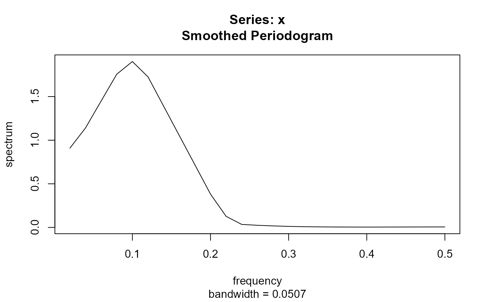
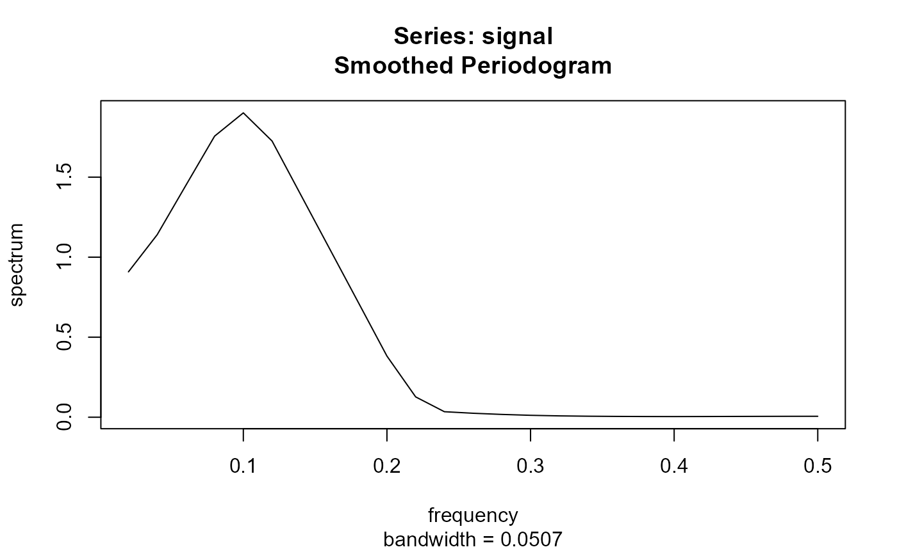
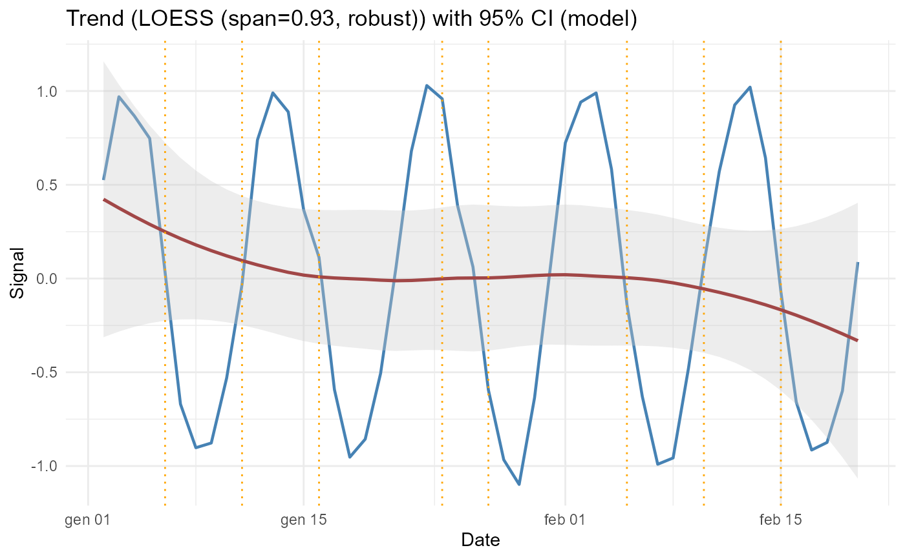

Adaptive Trend and Cycle Analysis for Time Series
Source:R/adaptive_cycle_trend_analysis.r
adaptive_cycle_trend_analysis.RdPerforms adaptive trend estimation, cycle detection, Fourier harmonic selection, bootstrap confidence intervals, change points detection, and rolling-origin forecasting. Supports LOESS, GAM, and GAMM models, and automatically handles irregular sampling using the Lomb–Scargle periodogram.
Usage
adaptive_cycle_trend_analysis(
signal,
dates,
normalize = FALSE,
trendmethod = c("loess", "gam"),
usefourier = FALSE,
fourierK = 2,
auto_fourier_select = TRUE,
fourier_selection_criterion = c("AICc", "BIC"),
fourierK_max = 6,
cimethod = c("model", "bootstrapiid", "bootstrapmbb"),
nboot = 1000,
blocksize = NULL,
seasonalfrequency = 7,
stlrobust = TRUE,
specspans = c(7, 7),
auto_seasonality = TRUE,
lagmax = NULL,
loess_span_mode = c("auto_aicc", "auto_gcv", "cv", "fixed"),
loess_span_fixed = NULL,
loess_span_grid = seq(0.15, 0.6, by = 0.05),
loess_cv_k = 5,
blocklength_mode = c("auto_pwsd", "heuristic", "fixed"),
blocklength_fixed = NULL,
robust = TRUE,
use_gamm = FALSE,
group_var = NULL,
group_values = NULL,
random_effect = NULL,
cor_struct = c("none", "ar1", "arma"),
arma_p = 1,
arma_q = 0,
forecast_holdout_h = 0,
forecast_origin_mode = c("expanding", "sliding"),
train_window = NULL,
forecast_lock_K = TRUE
)Arguments
- signal
Numeric vector of observed values.
- dates
Date vector of the same length as
signal.- normalize
Logical; if TRUE, Z score normalization is applied.
- trendmethod
Character;
"loess"or"gam".- usefourier
Logical; whether to include Fourier harmonics.
- fourierK
Integer; fixed number of harmonics if auto selection disabled.
- auto_fourier_select
Logical; if TRUE, selects K via AICc/BIC.
- fourier_selection_criterion
"AICc"or"BIC".- fourierK_max
Maximum K to consider during selection.
- cimethod
"model","bootstrapiid", or"bootstrapmbb".- nboot
Number of bootstrap samples.
- blocksize
Block size for MBB bootstrap.
- seasonalfrequency
Seasonal frequency for STL (regular sampling).
- stlrobust
Logical; robust STL decomposition.
- specspans
Smoothing spans for spectral estimation.
- auto_seasonality
Logical; if TRUE, uses dominant period.
- lagmax
Maximum lag for ACF and Ljung Box tests.
- loess_span_mode
"auto_aicc","auto_gcv","cv","fixed".- loess_span_fixed
Numeric; fixed LOESS span.
- loess_span_grid
Grid of spans for CV.
- loess_cv_k
Number of folds for blocked CV.
- blocklength_mode
"auto_pwsd","heuristic","fixed".- blocklength_fixed
Fixed block length.
- robust
Logical; robust LOESS or robust GAM family.
- use_gamm
Logical; fit GAMM instead of GAM.
- group_var
Character; grouping variable for random intercepts.
- group_values
Optional vector to attach as grouping variable.
- random_effect
Optional random effects list for
mgcv::gamm.- cor_struct
"none","ar1","arma".- arma_p, arma_q
ARMA orders.
- forecast_holdout_h
Holdout horizon for forecasting.
- forecast_origin_mode
"expanding"or"sliding".- train_window
Training window for sliding origin.
- forecast_lock_K
Logical; lock Fourier K across origins.
Value
A list containing:
Trend estimates
Confidence intervals
Residuals and diagnostics
Fourier selection results
Change-point locations
Spectral analysis
Forecast results (if enabled)
ggplot2 objects for visualization
Examples
set.seed(1)
dates <- as.Date("2020-01-01") + 1:50
signal <- sin(2*pi*(1:50)/10) + rnorm(50, 0, 0.1)
res <- adaptive_cycle_trend_analysis(
signal = signal,
dates = dates,
trendmethod = "loess",
usefourier = FALSE
)
#> Using original scale.
#> Regular dates: STL + LOESS/GAM(M)

#> Auto seasonality: dominant period approx 10.00 samples -> seasonalfrequency=10
#> loess.as proposed span (criterion=aicc) = 0.930
#> Warning: p-value smaller than printed p-value
#> Warning: p-value greater than printed p-value

plot(res$Plot$Trend)
